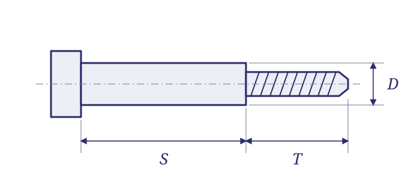

Custom fastener drawing & measurement guide.
Describe the length, threads and end configuration clearly before requesting a made-to-print part. Use these tables to prepare your inquiry and identify the dimensions that belong on the drawing.
How to describe screw and bolt length
A length without its measurement points can describe different parts. Identify the head style, length datum and thread requirement together. These are common conventions; the applicable drawing or part specification controls.
| Head or part type | Common length convention | Also specify |
|---|---|---|
| Pan, button, socket-cap or hex head | From the bearing surface beneath the head to the tip; head height is excluded. | Head height and diameter or across-flats, drive, thread and threaded length. |
| Flat countersunk head | Overall length, from the top of the flat head to the tip. | Head angle and diameter. Do not infer the head angle from the thread size. |
| Raised countersunk / oval head | From the countersunk seating plane to the tip; the raised dome is excluded. | The head profile and the measurement convention required by the specification. |
| Custom or modified head | Show the exact start and end points on the drawing. | Any additional overall length, grip, shoulder or thread-length requirement. |
Shoulder length and thread length are separate dimensions
A shoulder screw has a smooth shoulder between the head and the threaded end. Describe the shoulder diameter and its length separately from the thread size and threaded-end length.
For custom parts, show where the shoulder ends, where full threads begin and any relief, radius or runout detail required by the mating assembly. Do not use one unspecified “length” for all these features.
For selected standard configurations, see our MS51575 / MS51576 shoulder-screw comparison.

Spacer or standoff: identify the bore and the ends
In common purchasing usage, a spacer is an unthreaded sleeve that establishes distance between components. A threaded standoff also establishes distance and provides an attachment thread. Product terminology varies, and some standoffs use unthreaded or other attachment features. Describe the actual configuration rather than relying on the name alone.
| Configuration | What the description means | Drawing details to include |
|---|---|---|
| Unthreaded spacer | A through bore without an internal thread. | Inside diameter, outside diameter or across-flats, body length, material and finish. |
| Female / female standoff | Internal threads at both ends. | Each thread callout, thread depth, whether the bore is through or blind, and body length. |
| Male / female standoff | External thread at one end; internal thread at the other. | External thread size and projection, internal thread size and depth, and body length excluding the male projection. |
| Male / male standoff | External threaded projections at both ends. | Thread size and projection at each end, body length and overall length. |
Thread diameter alone does not identify the thread
Include the complete thread callout from the drawing, including pitch or threads per inch, thread series and class where specified. State units clearly. For parts with different threads on opposite ends, identify each end separately.
For example, “1/4-20 UNC” identifies an inch thread diameter, 20 threads per inch and the UNC series; “M6 × 1” identifies a metric thread with 1 mm pitch. These examples explain notation and are not interchangeable sizes. Carry the full drawing requirements into the RFQ.
A short checklist for the custom RFQ
Define the component
- Part number and current drawing revision
- Units, dimensions, threads and tolerances
- Material grade and specified finish
- Special processing, inspection and required records
Define the order
- Quantity and requested delivery date
- Expected repeat usage, if known
- Packaging or labeling requirements
- Any approved-source restrictions or permitted alternatives
Use the RFQ form for your contact information and requirements. Email drawings to info@websonfasteners.com with your company name and part number so we can match the files to the inquiry. Call (631) 243-1800 to discuss the requirement.
Request a custom fastener quote →Common drawing questions
Does screw length include the head?
Common raised-head screws are measured from beneath the head to the tip. Flat countersunk screws include the head in overall length. Raised countersunk heads use the seating plane rather than the top of the dome. Follow the applicable drawing or specification.
Is shoulder length the same as thread length?
No. Shoulder length describes the smooth shoulder section. Threaded-end length is a separate feature. Identify both, along with the shoulder diameter and full thread callout.
What is the difference between a male and female standoff end?
A male end has an external thread. A female end has an internal thread. Specify each end separately, including the external projection or internal thread depth.
Can I request a quote before every drawing detail is resolved?
Send the information you have and identify the open items. Webson can review the inquiry; production requires agreed drawing and purchase-order requirements.